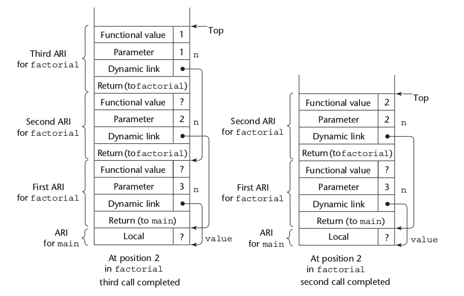

Conceptos Avanzados en Lenguajes de Programación
Implementación de Subrutinas
2016-09-27 mar 00:00
Created: 2022-09-12 lun 22:13
Semántica General de Llamada y Retorno
Semántica General de Llamada y Retorno
- Semánticamente es como si el subprograma se insertara en el punto de su llamada (no es siempre asi)
- En un lenguaje de Programación, las operaciones de llamado y retorno de subprogramas son llamadas en conjunto articulación de subprogramas
- La llamada a un subprograma tiene varias acciones asociadas con:
- El método de pasaje de parámetros
- variables locales estáticas
- Estado de ejecución del programa llamador
- transferencia del control
- Estructura de anidamiento de los subprogramas
Subprogramas Simples
Subprogramas Simples: LLamada
- Grabar el estado de ejecución del llamador
- llevar a cabo el proceso de pasaje de parámetros
- Pasar la dirección de retorno al subprograma llamado
- Transferir el control al programa llamado
Subprogramas Simples: Retorno
- Si se usó pasaje de parametros por valor-resultado, mover los valores actuales a esos parametors a sus correspondientes parametros reales
- Si es una función, mover el resultado al lugar donde el llamador pueda obtenerlo
- Restaurar el estado de ejecución del llamador
- Retornar el control al llamador
Subprogramas Simples: Partes
- Dos partes separadas: El Código y los Datos (variables locales y datos que pueden cambiar)
- El formato de la parte de datos de un subprograma en ejecución se llama registro de activación.
- Una instancia de un registro de activación es un ejemplo concreto de un registro de activación.
Código y Registros de Activación

Subprogramas con Variables locales en Pila Dinámica
Subprogramas con Variables locales en Pila Dinámica
- Registros de activación mas complejos
- El compilador debe generar código para alojar y desalojar implícitamente las variables locales
- Se debe soportar recursividad (posibilidad de múltiples activaciones simultáneas de un subprograma)
- El formato y muchas veces el tamaño es conocido en tiempo de compilación
Típico registro de activación para variables locales alojadas en pila dinamica

Ejemplo de Función en C
void sub(float total, int part) {
int list[5];
float sum;
...
}

Ejemplo sin recursividad
void fun1(float r) {
int s, t;
... <-------- 1
fun2(s);
....
}
void fun2(int x) {
int y;
... <---------- 2
fun3(y)
...
}
void fun3(int q) {
... <--------- 3
}
void main() {
float p;
...
fun1(p);
...
}
main llama a fun1, fun1 llama a fun2 y fun2 llama a fun3
Ejemplo sin recursividad

Cadena Dinámica y desplazamiento local
- el conjunto de ligaduras dinámicas y la Pila en un tiempo dada se llama cadena dinámica o cadena de llamadas
- Las variables locales se pueden acceder a partir de su desplazamiento desde el comienzo del registro de activación. Se llama desplazamiento local
- El desplazamiento local puede ser determinado en tiempo de compilación.
Un Ejemplo con Recursividad
- El registro de activación del ejemplo previo soporta recursividad, e.g.
int factorial(int n) {
<------- 1
if (n <= 1)
return 1;
else return (n * factorial(n - 1));
<-------- 2
}
void main() {
int value;
value = factorial(3);
<--------- 3
}
Un Ejemplo con Recursividad
Un Ejemplo con Recursividad

Un Ejemplo con Recursividad

Subprogramas imbricados
Subprogramas imbricados
- Algunos lenguajes de alcance estático no basados en C (fortran 95, Ada, JavaScript) usan variables locales alojadas en Pila Dinámicas y permiten que los subprogramas estén imbricados
- Todas las variables que pueden ser accedidas no localmente residen en alguna instancia de un registro de activación en la Pila
- El proceso de localizar una referencia no local incluye:
- Encontrar la instancia del registro de activación correcta
- Determinar el correcto desplazamiento dentro del registro
Localizar una Referencia no local
- Encontrar el desplazamiento es trivial
- Para encontrar la correcta instancia del registro de activación
- Las reglas semánticas del alcance estático garantizan que toda variable no local que pueda ser referenciada ha sido alojada en alguna instancia de un registro de activación en la Pila cuando la referencia es hecha.
Alcance Estático
- Una cadena estática es una cadena de punteros estáticos que conectan ciertas instancias de registros de activación
- El puntero estático en una instancia de un registro de activación para un subprograma A apunta a una de las instancias del registro de activación del padre de A en la estructura estática.
- La cadena estática de una istancia de un registro de activación la conecta con todos sus ancestros en la estructura estática.
Ejemplo
procedure MAIN_2 is
X : Integer;
procedure Bigsub is
A, B, C : Integer;
procedure Sub1 is
A, D : Integer;
begin - - of Sub1
A := B + C; <---------- 1
end; - - of Sub1
procedure Sub2(X : Integer) is
B, E : Integer;
procedure Sub3 is
C, E: Integer;
begin -- of Sub3
sub1;
E := B + A; <--------- 2
end; -- of Sub3
begin -- of Sub2
sub3;
A := D + E; <-------------3
end -- of Sub2
begin -- of Bigsub
sub2(7);
end -- of Bigsub
begin -- of Main_2
Bigsub;
end -- of Main_2
Contenido de la Pila en pos 1

Display
- Una alternativa a las cadenas estáticas
- Los punteros estáticos son almacenados en un arreglo único llamado display
- El contenido del display en un tiempo dado es una lista de las direcciones de las instancias de los registros de activación accesibles
Bloques
Bloques
- Los bloques son alcances locales para variables especificados por el usuario
- Un ejemplo en C
{ int temp;
temp = list[upper];
list[upper] = list [lower];
list[lower] = temp
}
- El tiempo de vida de temp en el ejemplo comienza cuando el control entra en el bloque
- La ventaja de usar una variable local como temp es que no interfiere con otra variable del mismo nombre
Implementando bloques
- Dos métodos
- Tratar a los bloques como subprogramas sin parámetros que son
siempre llamados desde la misma ubicación
- Todo bloque tiene un registro de activación, una instancia es creada cada vez que el bloque es ejecutado
- Ya que el máximo de almacenamiento requerido para un bloque puede ser determinado estáticamente, esta cantidad de espacio puede ser alojada después de las variables locales del registro de activación
- Tratar a los bloques como subprogramas sin parámetros que son
siempre llamados desde la misma ubicación
Ejemplo
void main() {
int x, y, z;
while ( ... ) {
int a, b, c;
...
while ( ... ) {
int d, e;
...
}
}
while ( ... ) {
int f, g;
...
}
}
Ejemplo
Implementando Alcance Dinámico
Implementando Alcance Dinámico
- Acceso Profundo: Las referencias no locales son encontradas buscando las instancias de los registros de activación en la cadena dinámica
- Acceso Superficial: Se colocan las variables locales en una tabla central
- Una pila por cada nombre de variable
- Tabla central con una entrada por cada nombre de variable
Ejemplo
void sub3() {
int x, z;
x = u + v;
}
void sub2() {
int w, x;
...
}
void sub1() {
int v, w;
...
}
void main() {
int v, u;
...
}
main llama a sub1, sub1 llama a sub1, sub1 llama a sub2 y sub2 llama a sub3
Ejemplo cadena dinámica
Ejemplo con tabla central